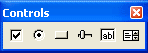

Controls Toolbar |
Choose Toolbars > Controls from the View menu to bring up the Controls toolbar:

The Controls toolbar and a corresponding Insert > Control submenu simplifies the inclusion of Windows-style controls in your worksheets.
To learn what a button does, hover the cursor over the button until a tooltip shows the title and a description appears on the message line of the Status Bar.